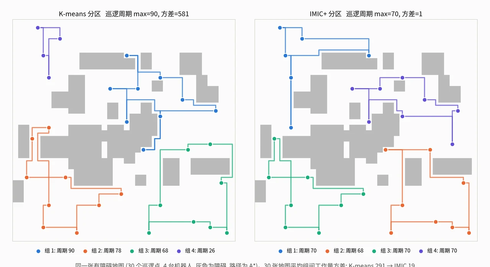
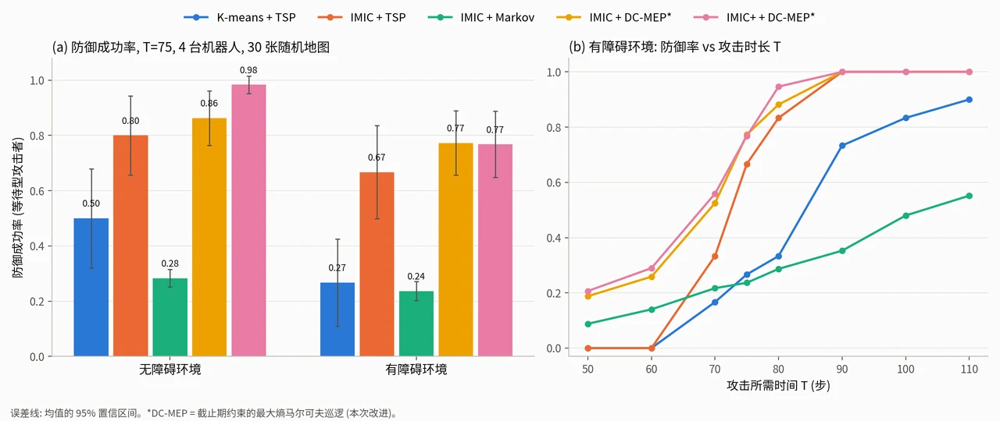

多机器人协同巡逻
几台机器人分片巡逻一片区域，对手会先观察、再挑最久没人去的点下手。我的本科毕设做了两件事：把区域分得更均衡，让巡逻路线更难预测。2026 年我按原思路重写了仿真，并找到一个比原方案更好的随机巡逻规则。
- 问题
- 多机器人巡逻：分区不均导致有的点太久没人去；固定路线容易被摸清规律
- 我做的
- IMIC 均衡分区、马尔可夫随机巡逻（毕设）；2026 重写仿真，新增截止期约束的最大熵巡逻
- 技术栈
- Python · A* · TSP · 马尔可夫链 · 蒙特卡洛评估
- 评估
- 30 张随机地图 × 有无障碍两种环境，4 台机器人，等待型攻击者
- 结果
- 有障碍环境下防御成功率从 27% 提到 77%；无障碍从 50% 提到 98%。达到 90% 防御率所需机器人减少约 21%。
- 说明
- 原代码和论文已遗失，现版本按毕设方法重写；原方案中的纯马尔可夫巡逻在本攻击模型下不如 TSP，页面如实给出。
场景与攻击者
40×40 栅格上有 30 个巡逻点，一半地图带约 20% 的矩形障碍，机器人之间的距离和路线都用 A* 计算。4 台机器人各负责一组点。
攻击者是“等待型”的：先旁观 3000 步，找出最容易得手的点；之后每当机器人离开这个点就开始攻击，攻击要持续 T = 75 步。这期间只要有机器人回到该点，就算防御成功。加强版攻击者还会挑选等待多久再动手。
- 分区把 30 个点分给 4 台机器人
- 巡逻每台在自己的组里决定下一站
- 评估攻击者观察后挑最弱的点
均衡分区
K-means 只看点的远近，分出来的组工作量差很多：有的组绕一圈要 90 步，有的只要 26 步。攻击者只需要盯住最长那组。
IMIC（改进的最小增量聚类）用最远点做种子，再把每个点分给“当前工作量 + 插入增量”最小的组，工作量就是组内 TSP 回路的长度。分完再从最重的组往外迁点。重写时我加了多组种子重启，以及组间换点（IMIC+）。


随机巡逻的陷阱
毕设里，每台机器人在组内按马尔可夫链随机选下一站，越久没去、越近的点概率越大。路线确实难猜了，路径熵从 TSP 的 0 升到约 2.5 bit。
但重写后的评估发现，这样做防御率反而更低：有障碍环境下只有 24%，比固定路线的 67% 差很多。原因是随机游走的回访间隔有长尾，总有某个点偶尔很久才被访问一次；攻击者不需要猜路线，只要等这个长尾出现。
截止期约束的随机巡逻
我的改进叫 DC-MEP：随机，但只在“安全”的选项里随机。机器人每到一个点，先列出下一站的候选，只保留去了之后仍然来得及把组内所有点在 T 步内都访问到的那些（判断方法是：去完之后，从某个点出发、沿组内 TSP 回路走一圈，能否让每个点的空闲时间都不超过 T），再在其中均匀随机选。
可以证明，只要组的回路长度不超过 T，这个规则下就没有点会空闲超过 T 步，同时路线依然随机，熵约 1.0–1.2 bit。回路长于 T 时，退化为按距离加权的随机游走；这个回退规则是在单独的调参地图上选的，不参与评估。
两部分是互补的：均衡分区让更多组的回路短于 T，DC-MEP 在这些组里“免费”换来不可预测性。
结果
- K-means + TSP（基线）
- 27%
- IMIC + 马尔可夫（毕设原方案）
- 24%
- IMIC + TSP
- 67%
- IMIC + DC-MEP（改进）
- 77%
无障碍环境下，IMIC+ 分区加 DC-MEP 达到 98%，基线是 50%。要让防御率达到 90%，有障碍环境下基线平均需要 5.5 台机器人（有 2 张图用 8 台也达不到），改进后约 4.3 台。


固定路线在单张地图上几乎是全有或全无：最长回路不超过 T 就全部防住，否则被选中的点必破。所以 TSP 类策略的方差很大，平均值要结合右图一起看。
局限
- 不是原始代码。毕设的代码和论文已经找不到，IMIC 细节、马尔可夫转移形式和攻击者模型都是按毕设思路重新实现的，数字和当年的不能直接对比。
- 攻击时间很短时谁都防不住。T ≤ 60 步时所有策略都无法保证，随机策略略好于 TSP，但防御率都在 35% 以下。
- 模型简化。没有机器人之间的碰撞和感知范围，假设全局空闲信息实时共享、没有通信延迟。